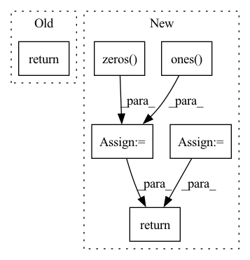

Pattern ID :1804

Before Change
trans_loss_t, domain_acc_t = self._single_domain_forward(g_t, f_t, domain=0)
self.grl.step()
self.domain_discriminator_accuracy = 0.5 * (domain_acc_s + domain_acc_t)
return 0.5 * (trans_loss_s + trans_loss_t)
def _single_domain_forward(self, logits, features, domain=1):
Perform forward on a single domain.
After Change
g = F.softmax(g,dim=1).detach()
h = self.grl(self.map(f, g))
d = self.domain_discriminator(h)
d_label = torch.cat((
torch.ones((g_s.size(0), 1)).to(g_s.device),
torch.zeros((g_t.size(0), 1)).to(g_t.device),
))
weight = 1.0 + torch.exp(-entropy(g))
batch_size = f.size(0)
weight = weight / torch.sum(weight) * batch_size
self.domain_discriminator_accuracy = binary_accuracy(d, d_label)
return self.bce(d, d_label, weight.view_as(d))
class RandomizedMultiLinearMap(nn.Module):
In pattern: SUPERPATTERN
Frequency: 3
Non-data size: 6
Instances
Fragment ID: 6980298
Project Name: thuml/transfer-learning-library
Commit Name: 8477111b23336e7dd2d349a4b35b969240ff5871
Time: 2020-04-12
Author: 13126830206@163.com
File Name: dalib/adaptation/cdan.py
M Class Name: ConditionalDomainAdversarialLoss
N Class Name: ConditionalDomainAdversarialLoss
M Method Name: forward(5)
N Method Name: forward(5)
M Parent Class: nn.Module
N Parent Class: nn.Module
M File Name: dalib/adaptation/cdan.py
N File Name: dalib/adaptation/cdan.py
M Start Line: 86
M End Line: 90
N Start Line: 87
N End Line: 100
'>
Before Change
trans_loss_t, domain_acc_t = self._single_domain_forward(g_t, f_t, domain=0)
self.grl.step()
self.domain_discriminator_accuracy = 0.5 * (domain_acc_s + domain_acc_t)
return 0.5 * (trans_loss_s + trans_loss_t)
def _single_domain_forward(self, logits, features, domain=1):
Perform forward on a single domain.
After Change
g = F.softmax(g,dim=1).detach()
h = self.grl(self.map(f, g))
d = self.domain_discriminator(h)
d_label = torch.cat((
torch.ones((g_s.size(0), 1)).to(g_s.device),
torch.zeros((g_t.size(0), 1)).to(g_t.device),
))
weight = 1.0 + torch.exp(-entropy(g))
batch_size = f.size(0)
weight = weight / torch.sum(weight) * batch_size
self.domain_discriminator_accuracy = binary_accuracy(d, d_label)
return self.bce(d, d_label, weight.view_as(d))
class RandomizedMultiLinearMap(nn.Module):
'>
Fragment ID: 6980302
Project Name: thuml/transfer-learning-library
Commit Name: 6dfc8e293ca2cbc4d116dc8ed0a6ef176dff0d06
Time: 2020-04-12
Author: 13126830206@163.com
File Name: dalib/adaptation/cdan.py
M Class Name: ConditionalDomainAdversarialLoss
N Class Name: ConditionalDomainAdversarialLoss
M Method Name: forward(5)
N Method Name: forward(5)
M Parent Class: nn.Module
N Parent Class: nn.Module
M File Name: dalib/adaptation/cdan.py
N File Name: dalib/adaptation/cdan.py
M Start Line: 86
M End Line: 90
N Start Line: 87
N End Line: 100
'>
Before Change
device = torch.device("cuda") if torch.cuda.is_available() else torch.device("cpu")
batch_size = anchor_output.shape[0]
targets_sketch = torch.zeros(batch_size)
targets_photos = torch.zeros(batch_size)
if epoch < 5:
lmbda = 0
elif epoch < 25:
lmbda = (epoch-5)/20.0
else:
lmbda = 1.0
loss_domain = self.domain_loss(grad_reverse(anchor_output, lmbda), targets_sketch) + self.domain_loss(grad_reverse(positive_output, lmbda), targets_photos) + self.domain_loss(grad_reverse(negative_output, lmbda), targets_photos)
loss_domain /= 3.0
total_loss = self.w_dom * loss_domain + self.w_sem * loss_semantic + self.w_triplet * loss_triplet // Our network minimizes this loss
return total_loss
After Change
device = torch.device("cuda") if torch.cuda.is_available() else torch.device("cpu")
batch_size = anchor_output.shape[0]
targets_sketch = torch.zeros(batch_size)
targets_photos = torch.ones(batch_size)
if epoch < 5:
lmbda = 0
elif epoch < 25:
lmbda = (epoch-5)/20.0
else:
lmbda = 1.0
loss_domain = self.domain_loss(grad_reverse(anchor_output, lmbda), targets_sketch) + self.domain_loss(grad_reverse(positive_output, lmbda), targets_photos) + self.domain_loss(grad_reverse(negative_output, lmbda), targets_photos)
loss_domain /= 3.0
total_loss = self.w_dom * loss_domain + self.w_sem * loss_semantic + self.w_triplet * loss_triplet // Our network minimizes this loss
return total_loss, loss_domain, loss_triplet, loss_semantic
'>
Fragment ID: 6980293
Project Name: ashok-arjun/zero-shot-sketch-based-image-retrieval
Commit Name: 408fd9d1d064dfa075be91fb92f8cbac8001eec4
Time: 2020-07-31
Author: arjun2000ashok@gmail.com
File Name: model/loss.py
M Class Name: DetangledJointDomainLoss
N Class Name: DetangledJointDomainLoss
M Method Name: forward(6)
N Method Name: forward(6)
M Parent Class: nn.Module
N Parent Class: nn.Module
M File Name: model/loss.py
N File Name: model/loss.py
M Start Line: 112
M End Line: 130
N Start Line: 106
N End Line: 130